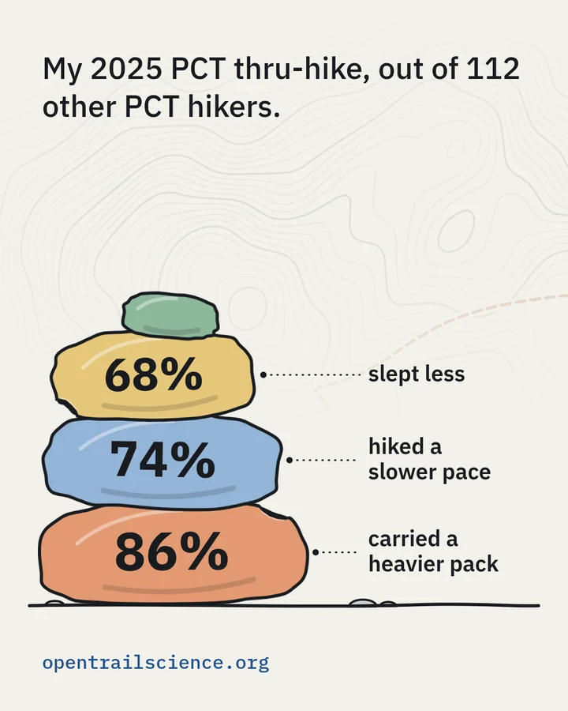

One survey for every long trail, open all year.
Pick your trail from the pile to start. Complete the survey and see how you compare to others. Every answer goes into a free, public dataset.
About 10 minutes. No names, emails or accounts, and your answers save on your device as you go. Privacy · Who's behind this?
Don't see your trail? Suggest it
I'll add trails that several hikers ask for.
Added from your suggestions latest 7 Nov
- 7 NovA question on urination aids. Suggested in the feedback box.
- 5 NovMain Beskid Trail (Poland), suggested by a hiker.
- 4 NovGR11 and Cumbria Way, suggested by hikers.
- 3 Nov"Mostly ate at huts or restaurants" as a way of eating on trail. Suggested in the feedback box.
Start here: pick your trail
Be part of the first 50
Once 50 hikers have shared their hike, this space shows some insights. Until then, every survey adds a stone.
0 of 50 hikers so far
Didn't finish?
Your hike matters just as much. Arguably more!
The hikes that stopped early are the ones that explain why hikes end. Section hikers and people who skipped large sections are welcome too.
Takes about ten minutes, yields valuable insights forever
Tell me about your hike. Don't remember something? Pick "Don't know" and continue, the rest you do know is still really valuable. You'll get a fun card showing how you compare on your trail, to share with others. All survey entries are completely open, with identifying details blurred before anything is saved. How I handle your data

Lots of opinions, not much data
Which trail sends the most hikers home early, and why? What pack weight makes for the happiest hike? Everyone on trail has an answer, but hardly anyone has the data to check.
That's what this survey is for. Every hike is published as a complete row, meaning all of one hiker's answers are together, so anyone can look for their own connections or even train models, like one that flags a high injury risk or optimizes pack weight for a specific happiness. That takes a lot of hikes tho!
Hi, I'm the hiker behind this survey.
I'm 20, and currently working part time as an EMT. I recently hiked the Tour du Mont Blanc, which was a really cool experience. If all goes well, I'll be attempting a thru-hike of the PCT in 2027.
While planning for the PCT I of course watched all the mandatory indie-folk-infused journey videos, but I also really enjoyed looking at different statistics and surveys. These are great for answering how popular a specific trend is. I, however, also wanted to check for interesting correlations or try to model some predictions, and I could not find any large datasets to use.
So I built opentrailscience.org, which aims to provide datasets for any long-distance trail. I never ask for your name or an annoying sign-up, and I blur the data a bit to make it harder to pinpoint a specific hiker, then publish every answer as an open dataset that anyone can download and play around with.
This is a one-person project, not a company. If you have any suggestions or questions, don't hesitate! hello@opentrailscience.org
How I handle your data
Open Trail Science publishes every survey answer as an open dataset. That only works if the people who answered are hard to pick out, so this page explains what I ask, what I store and why.
Last updated 20 November 2026 • consent version 4
The short version
- No names, emails, accounts, cookies, tracking or submission times.
- Before anything is saved, I blur the details that could point to you: dates become weeks, your age becomes a range and you only submit a world region.
- What I store about your hike is exactly what I publish. There is no more detailed copy.
- Feedback and trail suggestions aren't linked to your survey entry and aren't part of the released dataset.
- Some answers are health information, so I ask for your consent before the survey, and only adults (18+) can take part.
- You get a personal code to see how your hike compares with everyone who shares theirs later, or to delete your answer if you change your mind.
- The website and database are hosted in the USA, and the open dataset can be downloaded by anyone, anywhere.
What you tell me and what I store
Some questions need a precise answer for calculations (your pace, for example). The server works those out, then throws the precise answers away and only keeps the blurred version.
| You answer | I store and publish | Why |
|---|---|---|
| Start and end date 18 Apr – 22 Sep 2025 | Calendar weeks and months, number of days 2025-W16 to 2025-W39, 158 days | Exact dates are the easiest way to recognise someone. Weeks still show the season. |
| Dates and distance on a small trail | Months only, distance to the nearest 10 mi, days rounded to whole weeks | Few people hike these trails, so even a week could point to you. |
| Age at the start of the hike 29 | 5-year range (everyone 20 or younger shares one) 25–29 | An exact age plus dates narrows things down a lot. |
| Where you live | A world region Western Europe | On a trail few people hike, a country can be enough to tell who someone is. |
| Injuries, illness, prior injuries, deadline, urination aids | The categories you picked from a list | Free text can accidentally contain names, places or other people's details, so there is none. |
| Height, weight, what you spent on the trail and on gear (in USD or EUR), visa, gear, food, painkillers, mileage, zero days, ratings | As you entered them | These are what the research is about, and on their own they don't reveal who you are. |
| "Don't know" | An empty value and a note that you didn't know | So researchers can tell "didn't know" from "didn't apply". |
| How long the survey took you | A rough range 10–20 minutes | Helps researchers spot rushed answers. It's a duration, not a date or time. |
| Feedback after submitting, and trail suggestions (home page, or the "Other" trails in the survey) | The text you send, on its own, not part of the dataset | Only I read them, to improve the survey and the list of trails. |
Why blurring matters
Imagine someone knows that you started a specific trail in the first days of July 2025, that you're 24 and that you're from the Netherlands. If the dataset listed exact dates, ages and countries, they might find your row and see your injuries, weight and budget. With weeks, age ranges and regions, your row looks like the rows of other hikers on the same trail, so it's harder to tell which one is yours.
Weeks on the popular trails, where most hikers start within the same few weeks: .
Months on all others: .
No method is perfect: someone who knows enough about you or your hike might still find your row, and a small dataset makes that easier.
Technical data while you visit
- Web hosting
- My host, Netlify, needs your IP address to deliver the pages to your browser and keeps it in its server logs. I don't use these logs.
- Spam protection
- When you submit the survey, look up or delete a hike, send feedback or suggest a trail, I store a hashed form of your IP address, never linked to your answers, to allow at most 10 of each per hour from one network. You also answer a short trail question before the survey, and your browser solves a small calculation (about a second) when you submit. Neither involves a third party or is stored.
- Bot check by Cloudflare
- Cloudflare Turnstile's script loads when you start the survey, and its check runs when you press Submit. Cloudflare receives your IP address and browser details such as the user agent and, according to its Turnstile privacy addendum, uses them only to tell people from bots and to improve that detection. I only learn whether the check passed. Visiting the site without starting the survey doesn't contact Cloudflare.
- Your browser
- Your answers are saved in your browser's local storage while you fill in the survey, so a reload doesn't lose them, and are only sent when you submit. Your browser also remembers whether you chose light or dark mode.
- Fonts
- The fonts come straight from this website, not from a third party like Google Fonts.
Where your data is kept and for how long
| What | Where | How long |
|---|---|---|
| Survey answers | MongoDB Atlas (USA), and the public dataset, downloadable worldwide under CC0 | Until you delete them with your personal code, or as long as the project exists |
| Feedback and trail suggestions | MongoDB Atlas (USA), apart from the answers | Trail suggestions until I've looked at them; everything until 1 January each year |
| Server logs with your IP address | Netlify (USA) | 90 days online and one year offline (Netlify’s data processing agreement) |
| Hashed IP address (spam protection) | MongoDB Atlas (USA) | About an hour |
| Bot check data | Cloudflare (USA) | Up to Cloudflare; I only learn whether the check passed |
| Your draft and the light/dark setting | Your browser | The draft until you submit, press "Start over" or 14 days pass; the setting until you clear it |
Netlify, Inc. hosts the website and runs the code that checks and saves your answers, MongoDB, Inc. runs the database, and Cloudflare, Inc. the bot check. I have a data processing agreement with each of them.
What allows me to use your data
Data protection rules only allow me to use your data on certain grounds. These are the ones I rely on:
- Survey answers, including health information
- Your consent, which you give before the survey starts. Without it nothing is stored.
- Feedback and trail suggestions
- Your consent: you choose to send them.
- Server logs and the spam check
- My legitimate interest in keeping the website running and safe from bots.
- The draft and the light/dark setting in your browser
- They're needed for features you use, and they're kept only in your browser.
Your rights
You can see, correct and delete your answers, and you can withdraw your consent at any time by deleting your hike. Seeing and deleting work with your personal code. To correct an answer, delete your hike and fill in the survey again. For anything else, write to me. The stored answers contain nothing like your name, so your personal code is the only way to show which record is yours.
Deleting your answers
After submitting, you got a personal code like 7K3Q-M9XD-2WPA-HV4T. Enter it here to delete your hike:
- Your answers are deleted from the database immediately and disappear from the website and the download files with the next dataset update (usually within a day).
- Copies that someone already downloaded can't be recalled.
- Without your code I can't find your answers, because nothing in them says who you are.
- The same code also shows your hike and how it compares today (on the Insights page). Keep it to yourself: anyone with the code can delete your answers.
Who is responsible
Open Trail Science is a one-person, non-commercial project (that's me, see About the creator). For any privacy question or request, write to:
The whole site is open source: the code that checks, blurs, stores and publishes your answers is on GitHub.
If this page ever changes in a way that affects how answers are stored, the consent version above changes too, and every record keeps the version its author agreed to.
What the data says so far
A first look at the open dataset. These are self-reported answers, not a controlled study.
Charts unlock at 50 hikers
With fewer hikes, any chart would mostly show noise. Help get it there.
Groups with fewer than 5 hikers are left out. Every chart has a table view for exact numbers.
Some things that go together
Shared your hike already?
Enter your personal code from the thank-you page to see how your hike compares today, with everyone who has answered since.
Another hiker survey
Halfway Anywhere has run detailed yearly hiker surveys for over a decade. If you hiked one of these trails, consider sharing your hike there too.
- Halfway Anywhere: yearly PCT, CDT and JMT hiker surveys. PCT survey · CDT survey
Share your hike
What happens with your answers
- 1The survey takes about 10 minutes. I never ask for your name, email or an account.
- 2Your answers are published as an open dataset that anyone can download. That's the whole point of the project: free data for hikers and researchers.
- 3Before anything is saved, I blur the details that could point to you: dates become calendar weeks (months on small trails), your age becomes a 5-year range (everyone 20 or younger shares one) and you only enter a world region. There are no free-text answers. That makes your row harder to pick out, but it's blurred, not anonymous, and a small dataset limits the effectiveness of blurring.
- 4Some answers are health information (injuries, illness, painkiller use, body weight). Please only take part if you're comfortable with them being published this way.
- 5After submitting you get a personal code: come back with it to see how your hike compares as more hikers join, or to remove your answers from the dataset in case you change your mind later. Copies that others already downloaded can't be recalled, though.
The full details: How I handle your data.
So I know you're a hiker and not a bot: which of these would a thru-hiker leave at home?
Thanks for sharing your hike
Your hike is now part of the open dataset. Every answer makes the picture of long-distance hiking a little clearer, for future hikers and for anyone researching it.
Show all my answers
Exactly what is stored and published for this hike, after blurring.
Come back later and see how you compare
Every new hike makes the comparison more accurate. Enter this code on the Insights page anytime to see how your hike stacks up today, with a fresh share card.
It's also the only way to delete your answer in case you change your mind later (on the privacy page). I don't know who you are, so I can't look it up for you: please save it somewhere safe.
How you compare on every answer
Each number is the share of hikers you're above or below. Hikers with the same answer count for neither side, so the two don't always add up to 100%.
| Answer | You | Same trail | All hikers |
|---|
Was a question confusing, missing or just annoying? Tell me! This box is optional. It isn't connected to your survey entry and isn't part of the released dataset.
Please don't include your name or personal or health details.
The Dataset
Every answer from the survey, checked, documented and with identifying details blurred. Free to use for anything.
CC0 public domain • schema documented below
Data Preview
Have a quick look at the real entries right here in your browser. It updates whenever the dataset is rebuilt.
| Trail | Year | Direction | Base Wt | Pace | Backpack | Cook Sys | Pad | Status | Injury | Enjoyment |
|---|---|---|---|---|---|---|---|---|---|---|
| Loading dataset preview... | ||||||||||
Data Dictionary
Every column in file order, generated from the same schema that checks each submission.
- Numbers are stored in imperial units; columns ending in
Kg,Cm,KmorMrepeat them in metric. nullmeans the question did not apply, unless the column is listed inunknownAnswers, which means the hiker answered "Don't know".- Derived columns are computed on the server and never asked.
Show all the columns
| Column | Type | Values / Units | Notes |
|---|
About This Data
How the data was collected, and what to keep in mind when you analyse it.
- Collection
- An online survey for adults (18 or older when answering) who have hiked a long-distance trail, shared through hiking communities. The hike itself may be from before they turned 18, so the "20-and-under" age band can include hikes by minors. I ask for consent before the survey starts, and there are no names, emails or accounts. Each record is one hike.
- Validation
- The same schema checks every answer, both in the browser and on the server: ranges, allowed values, dates in the right order and not in the future, ramp-up weeks that match the dates, and a pace below 100 mi/day. Every question has to be answered or explicitly marked "Don't know".
- Missing values
- No silent defaults: choice cards, sliders and yes/no questions all start unanswered. Missing numbers are null, never 0. Check
unknownAnswersto tell "Don't know" from "not applicable". - Known biases
- People decide themselves whether to take part (self-selection), and everyone answers after their hike, from memory (recall bias;
monthsSinceTraillets you control for it). Finishers are probably over-represented, which is why I really encourage people who went home early to answer too. - Privacy protection
- Anything that could help identify someone (quasi-identifiers) is generalised before it's stored, so the database is exactly the public file: ISO weeks instead of dates (months, 10-mi distances and whole-week durations on small trails, see
datePrecision), 5-year age bands (one band for 20 and under) for the age at the start of the hike, world regions instead of countries, no submission timestamp and no free text. Derived values are computed from the exact answers first, then the exact answers are discarded. Rows are ordered by trail, year and start month (random within a group), never by submission order. In a small dataset blurring protects less. - Spam and test data
- Bots are filtered out by honeypot fields, a minimum completion time, a short trail question, a small proof of work in the browser, Cloudflare Turnstile and per-network rate limits. Synthetic records I use for development never end up in the public files.
- Source code
- Everything behind this dataset is open source on GitHub: the survey, the schema that validates every answer, the blurring and the export.
- Updates and license
- The CSV and JSON files are rebuilt after every 5 new or deleted answers (at most every 6 hours), and overnight if anything is still pending. Public domain under CC0 1.0. Every record keeps the
schemaVersionit was collected under.